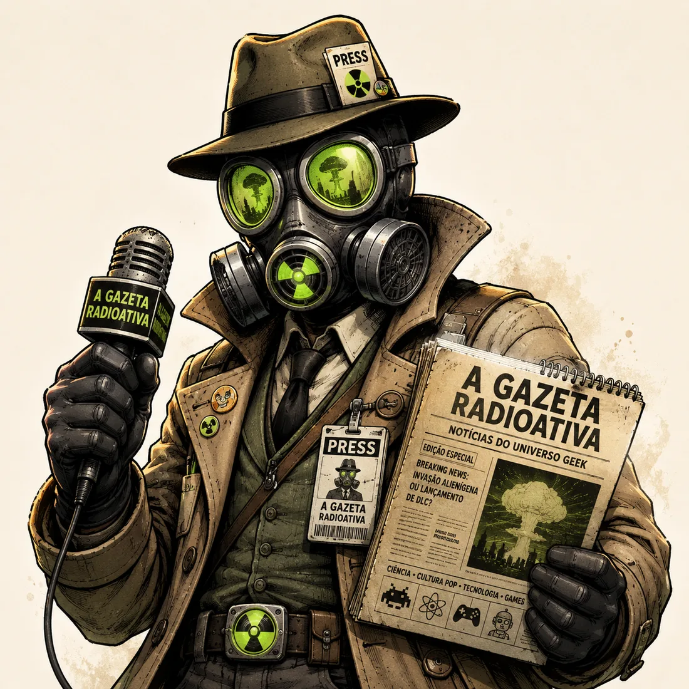

O sinal verde no fim do multiverso
A primeira edição abre a redação e apresenta o manifesto da Gazeta: cultura pop, nostalgia, teorias e projetos nerds tratados como notícias vindas de um universo instável.
Ler matériaEdição especial do multiverso nerd
Um jornal fictício sobre cultura pop, games, quadrinhos, nostalgia e teorias que sobreviveram à radiação do hype.

Trailers suspeitos, consoles renascidos, teorias instáveis e sinais de vida no arquivo retrô.
A primeira edição abre a redação e apresenta o manifesto da Gazeta: cultura pop, nostalgia, teorias e projetos nerds tratados como notícias vindas de um universo instável.
Ler matériaCartuchos, locadoras, animes na TV aberta e a estética que nunca saiu do laboratório.
Ler matériaComo easter eggs viraram combustível para teorias, cortes quadro a quadro e ansiedade coletiva.
Ler matériaUma lista curta para quem quer aventura, nostalgia e radiação narrativa controlada.
Ler matériaMapa da redação
Notícia principal, análise ou opinião forte.
Nostalgia, personagens antigos e games retrô.
Recomendações de filmes, séries, HQs e jogos.
Opinião pessoal sobre cultura pop.
Análises profundas, teorias e conexões improváveis.
Projetos, testes, interfaces, apps e experimentos.
Laboratório Nerd
A Gazeta Radioativa pode funcionar como vitrine para jogos, interfaces, apps e experimentos com estética geek. Cada projeto vira uma matéria, um making of ou um relatório de campo.